점프!
우리가 함께 걸어 만든
용기의 60km
2025 월드비전 '꿈꾸는아이들' 국토대장정 현장에서
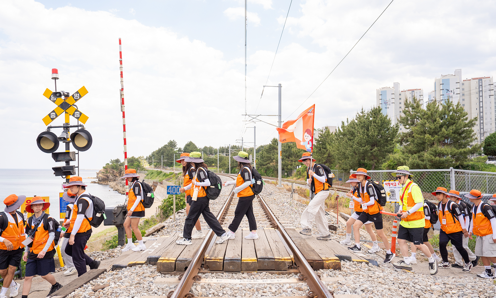
햇살이 뜨겁게 내려앉은 강원도 삼척의 해변, 낯선 곳에 선 아이들의 눈엔 약간의 긴장과 가슴 뛰는 설렘이 어우러져 있었습니다. 60km의 낯선 여정. 하지만 이 길 끝에 무엇이 있을지는 아무도 몰랐습니다. 단지 한 가지, [‘Jump’ — 점프] 올해 국토대장정의 주제처럼 그들은 각자의 한계를 넘고 싶은 마음뿐이었습니다. 그리고 그 4일간의 발걸음은 ‘함께’라는 이름으로 더 단단하고 깊어졌습니다.
1일차
처음 내디딘 용기, 처음 만난 나
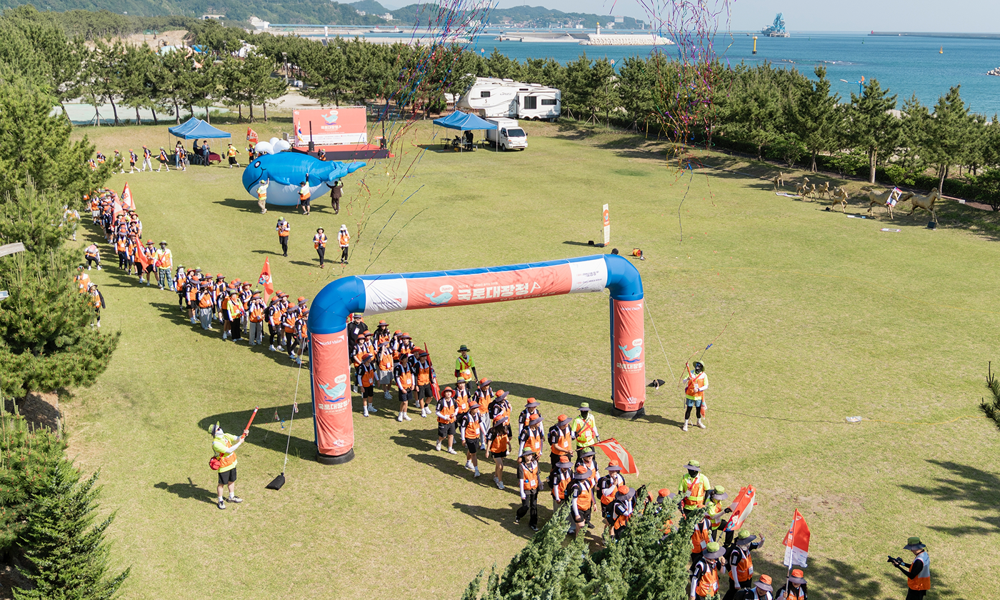
운동을 좋아하지 않는 저에게도
이 여정만큼은 꼭 도전해보고 싶었어요.
이 여정만큼은 꼭 도전해보고 싶었어요.
하윤(가명, 중2)이 그렇게 말한 순간, 그 눈빛엔 이미 시작된 여정의 무게와 그 안의 성장이 녹아 있었습니다. 국토대장정에 앞서 매일 만보를 걸으며 준비했지만, 막상 시작된 행군은 상상 이상으로 고되었습니다. 하지만 바다를 마주하며 친구의 손을 잡고 한 걸음씩 내디딜 때, 하윤은 조금씩 자신을 이겨냈습니다. “태어나 처음 본 바다였어요. 현실 같지 않을 정도로 아름다웠어요. 오길 정말 잘한 것 같아요.”
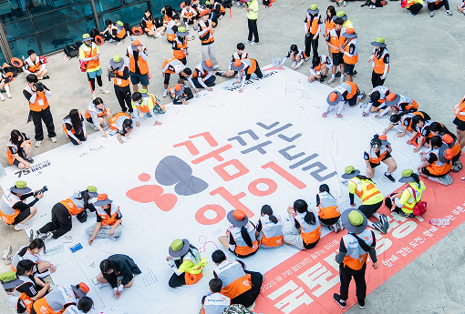
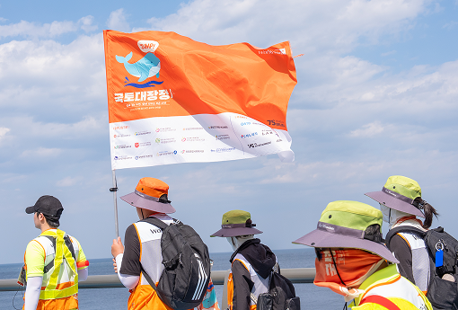
출발 직전 발목을 삐끗한 이현(가명, 중2)도 있었습니다. 참가를 포기할 수 있는 상황에서 이현은 갑작스러운 부상에 대비해 함께하는 구급 차량을 이용하여 걷기와 차량 이동을 병행하며 자신만의 방식으로 이 여정에 함께했습니다. “제가 할 수 있는 최선을 다했어요. 그걸로 충분하다고 느꼈어요.”
그들의 첫걸음은 두려움을 넘는
용기의 시작이었습니다.
용기의 시작이었습니다.
2일차
기후위기의 현장에서 배운 것들
국토대장정 둘째 날부터는 기후위기와 마주하는 체험이 이어졌습니다. 해변 플로깅을 하며 직접 쓰레기를 주워보는 것부터 그 쓰레기로 환경 슬로건을 만들어보는 활동, 그리고 가장 특별했던 ‘글로벌 6K 야간행군’이 있었습니다.
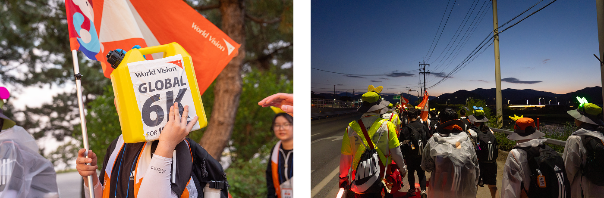
야간행군을 통해 매일 깨끗한 물을 얻기 위해 6km를 걸어야 하는 개발도상국 아이들의 현실을 체험하며, 하윤은 무거운 물통을 들고 걸었습니다.
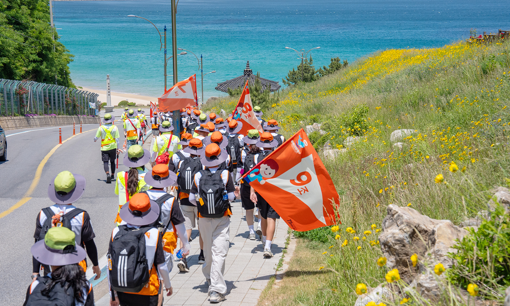
걸을수로 더 힘들었지만,
이 길을 매일 걷는 아이들을 생각하니
저도 더 단단해졌어요.
이 길을 매일 걷는 아이들을 생각하니
저도 더 단단해졌어요.
아이들을 위한 특별한 응원도 있었습니다.월드비전 후원자들이 마련한 간식차에 아이들이 좋아하는 유튜버 이상한과자가게, 돼끼, 레시피읽어주는여자, 수네마틱이 함께해 팝콘치킨과 과일 화채를 나눠줬습니다. “정말 좋아하는 유튜버들이 직접 간식을 나눠줬어요. 너무 신기하고, 덕분에 지친 발걸음이 훨씬 가벼워졌어요.”
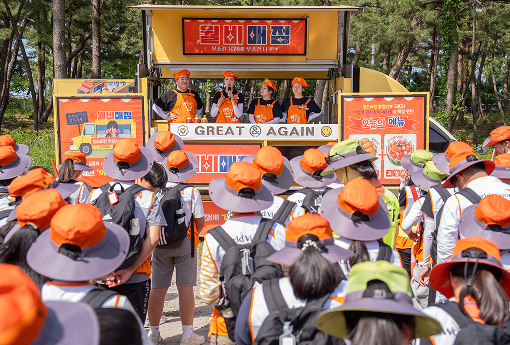
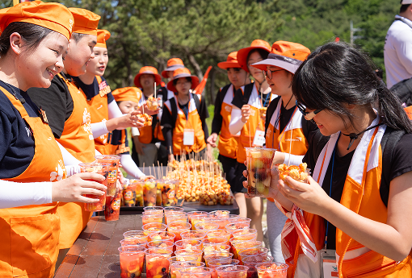
이현의 말처럼, 뜻밖의 만남은
또 하나의 응원이 되었습니다.
또 하나의 응원이 되었습니다.
3일차
한계를 넘어, 나를 만나는 시간
내 안에 이런 힘이
있는 줄 몰랐어요.
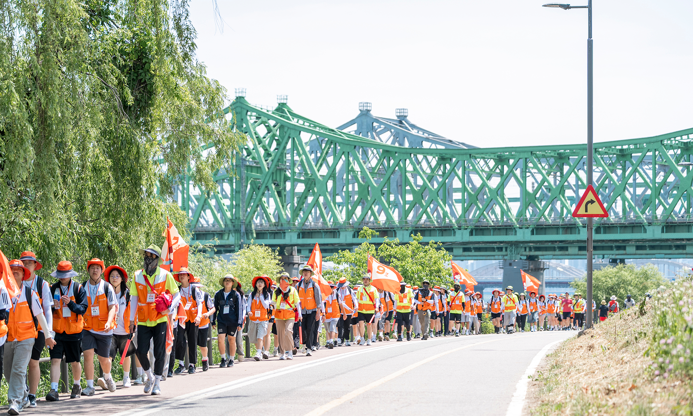
있는 줄 몰랐어요.
결승점이 가까워질수록 아이들은 서로를 더 깊이 의지했습니다. 지쳐갈수록 더 웃고, 손을 잡고, 걸었습니다. 그렇게 60km를 함께 걸어낸 아이들은 여의도공원에서 열린 해단식에서 완주 인증서를 손에 쥐며 서로를 꼭 안고, 기쁨을 나눴습니다.
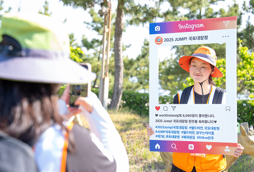
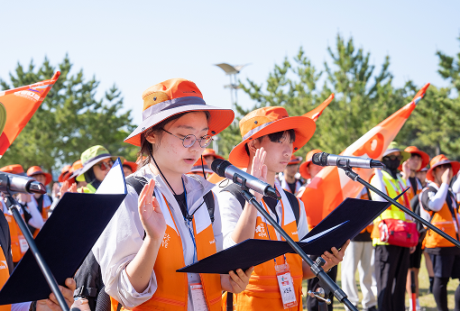
하윤은 “이제는 뭐든 도전할 수 있을 것 같아요”라고 말하며 환하게 웃었습니다.이현도 말했습니다. “다리는 아팠지만 끝까지 참여한 게 너무 뿌듯해요. 무슨 일이든 한 번 더 용기를 낼 수 있는 힘이 될 것 같아요.”
JUMP
함께 걸어 만든 성장의 시간
2025 월드비전 ‘꿈꾸는아이들’ 국토대장정은 단순한 걷기 여정이 아니었습니다. 그것은 도전이었고, 만남이었으며, 세상을 마주한 깊은 체험이었습니다. 기후위기의 현실을 피부로 느끼고, 스스로의 한계를 넘어선 시간. 그리고 그 안에서 친구와 함께 걷는다는 것의 진정한 의미를 발견한 날들.
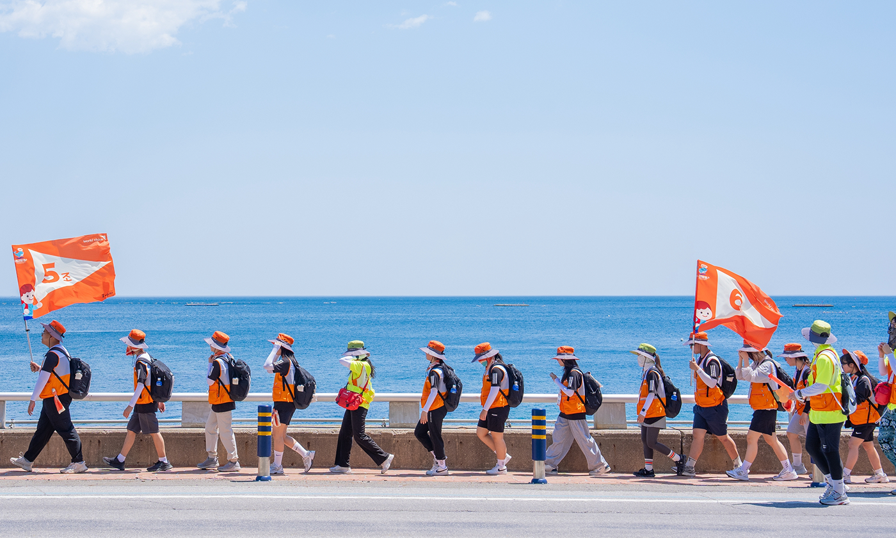
하윤의 말처럼, '살면서 딱 한 번뿐인 이 시간'은
분명 오랫동안 아이들의 마음 속에 남아,
앞으로의 길 위에서도 힘이 되어줄 것입니다.
그들이 함께 내디딘 발걸음이 만든
분명 오랫동안 아이들의 마음 속에 남아,
앞으로의 길 위에서도 힘이 되어줄 것입니다.
그들이 함께 내디딘 발걸음이 만든
'Jump'-점프, 그건 단지
발이 아닌 마음으로 뛰어오른 순간이었습니다.
발이 아닌 마음으로 뛰어오른 순간이었습니다.
이번 국토대장정에는 다양한 기업들이 물품 후원을 통해 아동들의 도전을 응원했습니다.
▲강원관광재단에서 스포츠타월과 텀블러 170개 ▲농심켈로그에서 에너지바 1,728개 ▲라운드랩에서 선크림 260개 ▲몽베스트에서 2L 무라벨 생수 550개 ▲주식회사 영앤룸에서 BTS칫솔 200개 ▲YG엔터테인먼트에서 밥차 1회 ▲제리백에서 워터보틀 200개 ▲평화장갑무역에서 스포츠양말 200켤레를 각각 후원하며 의미 있는 여정에 함께했습니다.
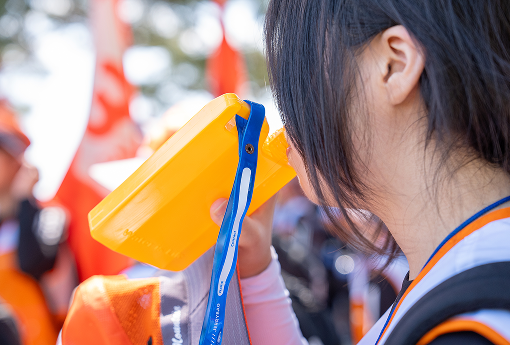
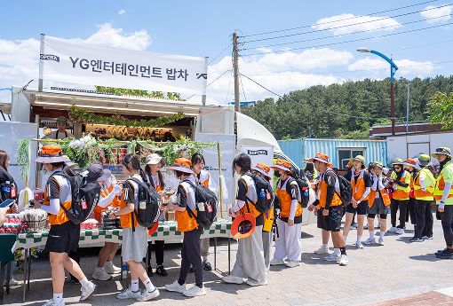